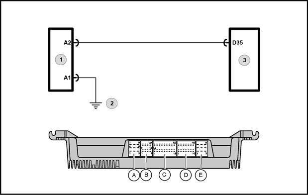
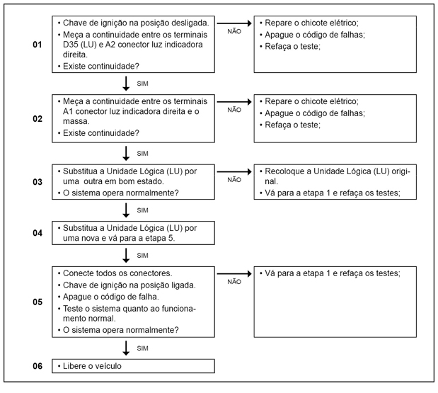

Legenda
- Luz indicadora de direção lateral direita
- Ponto de massa localizado na frontal do veículo
- Unidade Lógica (LU)
Descrição da Falha
Circuito da luz indicadora de direção frontal direita, interrompido.
Indicação de Falha
A
frequência de piscadas é dobrada quando o pisca-alerta é ligado, bem
como o som de "click" e os sinais (indicadores de direção) no painel de instrumentos.
Estratégia de Monitoramento
A
Unidade Lógica (LU) monitora o circuito da luz indicadora de direção
frontal direita quanto à curto para o massa e interrupção.
Efeito da Falha
A frequência de piscadas do sistema de luzes direcionais será dobrada.
Possíveis Falhas
FMI 5: Interrupção no circuito.
FMI 6: Curto circuito para o massa.
- Verificar visualmente o soquete da luz indicadora de direção frontal direita.
- Analisar o filamento da lâmpada e medir a continuidade entre os dois pólos da luz indicadora de direção frontal direita.
- Verificar chicote elétrico quanto a cabos partidos e conexões.
Avisos
 Leia sempre as Recomendações para Diagnósticos. Leia sempre as Recomendações para Diagnósticos.
Registro de Falhas em
Outros Módulos de Comando
----
Passos do Diagnóstico de Falhas
Considerar os esquemas elétricos do veículo

|